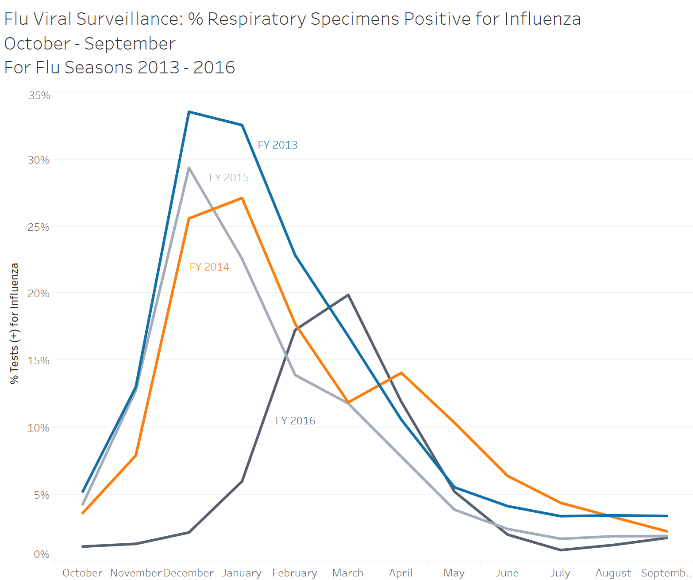

Today’s post is all about line graphs using both ggplot for a static graph as well as a package called plotly for interactivity (more on this later). The example graph and data is again coming from Tableau for Healthcare, Chapter 10. 
Load Libraries
As always first step is to load in our libraries, I am using quite a few here, some are a bit overkill for this example but I wanted to play around with some fun features today.
library(magrittr) #pipes
library(ggplot2) #ploting
library(dplyr) # data manipulation
library(tidyr) # tidy data
library(lubridate) #work with dates
library(stringr) # manipulate strings
library(plotly)
Import Data
Next lets import our data, this week we are using the sheet Flu Occurrence FY2013-2016. I am unsure if this is form a real data set or not but it is good for demonstration purposes! After importing we can glimpse at our data to understand what is contained within.
ds <- readxl::read_xlsx(path = "../../../static/data/Tableau 10 Training Practice Data.xlsx"
,sheet = "05 - Flu Occurrence FY2013-2016"
)
ds %>% glimpse()
## Observations: 48
## Variables: 4
## $ Date <dttm> 2012-10-27, 2012-11-2...
## $ `Tests (+) for Influenza (count)` <dbl> 995, 3228, 22368, 2461...
## $ `Total Respiratory Specimens Tested (count)` <dbl> 18986, 24757, 66683, 7...
## $ `% Tests (+) for Influenza` <dbl> 0.05240704, 0.13038737...
Transform Data
I went a bit overboard today with renaming the variables. I wanted to practice writing a function and while it might not be the prettiest or the best way to do this, it worked for what I was trying to accomplish. Note the use of sapply, which lets us run the function on each column name.
format_names <- function(x) {
#Fucntion to set all names to lower case, and strip unneeded characters
x <- tolower(x)
x <- str_replace_all(x,c(#set each pattern equal to replacement
" " = "_"
,"\\(\\+\\)" = "pos" #regualr experssion to match (+)
,"\\(" = ""
,"\\)" = ""
,"\\%" = "pct"
)
)
}
#run the format name function on all names from DS
colnames(ds) <- sapply(colnames(ds),format_names)
Now is were the fun really starts! For this particular data set there are a couple things we need to add to replicate the example. In the original data set the date is stored with month, day, and year; the day is irrelevant and we need to pull out the month as well as the year. For this we can use the lubridate package, first we pull out the month and set it as a factor. For this example our year actually starts in October, so we set our factor to start at October (10), and end with September (9). We then pull out the year, which presents us with a different problem. Again our year starts in October, instead of January. To solve this I have created a variable called date adjustment, in this column is our month is 10 or greater, we will place a 1, if not a 0. We then set our fiscal year to be the actual year plus the date adjustment, this allows us to have our dates in the right fiscal year. Last the percent column is currently listed as a decimal, so we will convert this to a percentage.
# split date time
ds1 <- ds %>% mutate(
#create month column, then set factors and labels to start fiscal year in Oct
month = month(ds$date)
,month = factor(month
,levels = c(10:12, 1:9)
,labels = c(month.abb[10:12],month.abb[1:9]))
,year = year(ds$date)
,date_adjustment = ifelse(month(ds$date) >= 10, 1,0 )
,fiscal_year = factor(year + date_adjustment)
#convert % Pos from decmial to pct
,pct_tests_pos_for_influenza = round(pct_tests_pos_for_influenza * 100, digits = 0)
)
ds1 %>% glimpse()
## Observations: 48
## Variables: 8
## $ date <dttm> 2012-10-27, 2012-11-24, 2...
## $ tests_pos_for_influenza_count <dbl> 995, 3228, 22368, 24615, 1...
## $ total_respiratory_specimens_tested_count <dbl> 18986, 24757, 66683, 75614...
## $ pct_tests_pos_for_influenza <dbl> 5, 13, 34, 33, 23, 17, 11,...
## $ month <fct> Oct, Nov, Dec, Jan, Feb, M...
## $ year <dbl> 2012, 2012, 2012, 2013, 20...
## $ date_adjustment <dbl> 1, 1, 1, 0, 0, 0, 0, 0, 0,...
## $ fiscal_year <fct> 2013, 2013, 2013, 2013, 20...
GGplot
The graph here is pretty straight forward with one exception, group! For this line graph we want ggplot to connect the lines of the same year, if we do not explicitly state this using the group mapping, ggplot will try to connect all the lines together, which of course is not at all what we want!
g1 <- ds1 %>%
ggplot(aes(x = month, y = pct_tests_pos_for_influenza, color = fiscal_year
,group = fiscal_year)) +
geom_line() +
labs(
x = NULL
,y = "% Tests (+) for Influenza"
,color = NULL
,title = "Flu Viral Surveillance: % Respiratory Specimens Positive for Influenza \nOctober - September \nFor Flu Seasons 2013 - 2016"
) +
theme_classic() +
scale_y_continuous(breaks = seq(0,40,5)) +
scale_color_manual(values = c("#a6611a","#dfc27d","#80cdc1","#018571"))
g1

plotly
One of the nice features of Tableau is the fact the graphs are interactive, while a good graph should speak for itself, end users love pretty things. I have been experimenting with Plotly, which has an open source package for R (as well as many other programming languages!). This example only just scratches the surface, but there will be many more to come!
g2 <- ds1 %>%
plot_ly(x = ~month, y = ~pct_tests_pos_for_influenza, type = "scatter", mode = "lines"
,color = ~fiscal_year
,colors = c("#a6611a","#dfc27d","#80cdc1","#018571")
, hoverinfo = 'y') %>%
layout(xaxis = list(
title = ""
)
,yaxis = list(
title = "% Tests (+) for Influenza"
)
,title = "Flu Viral Surveillance: % Respiratory Specimens Positive for Influenza"
,legend = list(
x = 100
,y = 0.5
)
)
g2